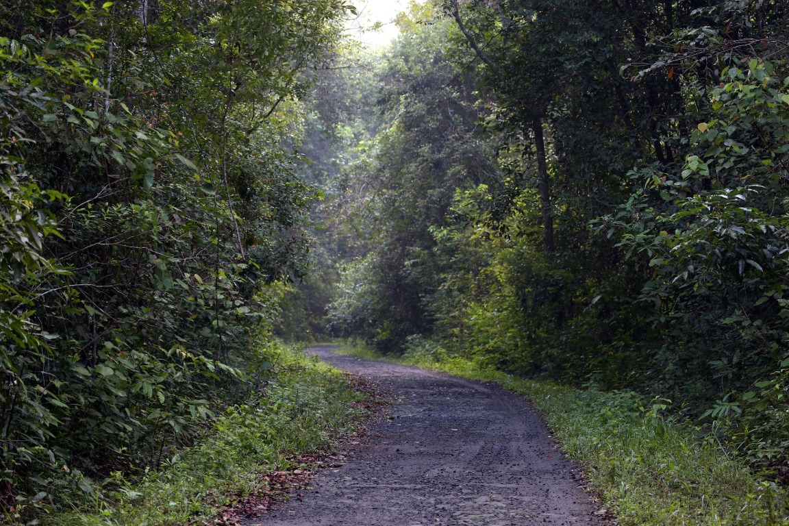

Protect Our Forests, Secure Our Future.
Forest fires threaten our ecosystems, wildlife, and communities. Discover the issues, understand the impact, and take action for a greener Indonesia.
Explore ForestWatch Start Your Green Journey
- Protect Forests
- Preserve Biodiversity
- Inspire Green Action

GOGREEN
Welcome to GO GREEN
GO GREEN connects environmental awareness with practical action. Explore NASA FIRMS hotspot detections for Lampung, learn about conservation, record concerns on this device, build daily habits, and estimate your personal contributions.
Our Forests Need Us.
Forests sustain biodiversity, regulate the climate, store carbon, and support communities. Forest fires and deforestation can threaten these vital ecosystems.
ForestWatch: Monitor Lampung Hotspots.
Explore NASA FIRMS satellite hotspot detections for Lampung and understand how environmental monitoring can support early awareness.
Connecting to NASA FIRMS…
EcoBot AI — Your Environmental Assistant.
Small questions. Greener decisions. Open the chat at the bottom right, or .
See a Problem? Help Protect Our Environment.
Environmental awareness becomes more meaningful when people can document concerns and encourage responsible action.
Reports are saved only in this browser. They are not sent to authorities or emergency services. For urgent incidents, contact the appropriate local services directly.
If you encounter an active fire, stay away from danger and contact the appropriate local emergency services. Do not enter burning forest areas to collect evidence.
Your Daily Actions Matter.
Small habits can inspire a greener future.
Your challenge progress is stored only in this browser and is not shared or ranked.
Measure Your Green Impact.
Understand how everyday choices can contribute to a more sustainable lifestyle.
Results are self-reported estimates from your inputs. No carbon conversion is applied; tree counts are not verified carbon removal.
Live Greener, Starting Today.
Environmental Facts You Can Trust.
Reliable decisions depend on transparent, verifiable data. Explore these external references; this page does not display live environmental statistics.
A Greener Future Starts With Us.
GO GREEN is an environmental awareness initiative that helps people explore conservation topics, review satellite hotspot detections, record concerns on their own device, and build sustainable habits.
Environmental Awareness
Forest and Biodiversity Conservation
Community-Driven Green Action
How GO GREEN Supports Environmental Awareness.
- Discover environmental concerns.
- Explore NASA FIRMS hotspot data.
- Ask EcoBot for explanations.
- Record an environmental concern on this device.
- Complete a green action challenge.
- Calculate estimated environmental contributions.
Why GO GREEN?
GO GREEN brings environmental information and practical learning activities together. Use the linked sources to verify information and contact the relevant local agencies to report incidents.